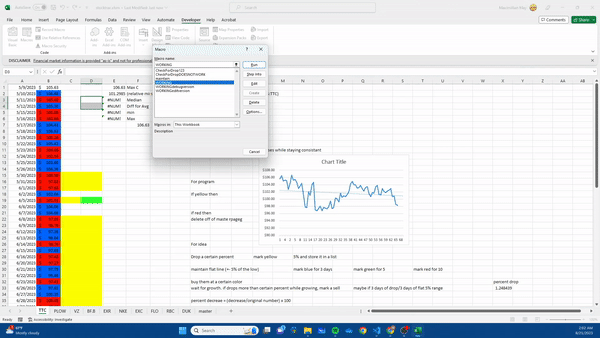

Sub WORKING()
Dim lastPrice As Double
Dim currPrice As Double
Dim maxPrice As Double
Dim ws As Worksheet
Dim diff As Double
Dim row As Integer
Dim count As Integer
For Each ws In ThisWorkbook.Worksheets ' Loop through each worksheet in the active workbook
ws.Activate ' Activate the worksheet
Range("C1:C74").Value = "" ' Delete all info
lastPrice = Range("B1").Value ' Read first number
Range("E1").Formula = "=MAX(B:B)" ' Will have to move this to auto sheet creator
maxPrice = Range("E1")
Dim i As Integer
i = 2 ' Starting row where numbers are entered
Set rng = Range("C1:C74") ' Range for highlighting
count = 0
Do While Not IsEmpty(Range("B" & i))
currPrice = Range("B" & i).Value ' Read next number
If currPrice <> 1 Then ' Check if end of input has been reached
diff = maxPrice - currPrice ' Calculate difference
If diff > maxPrice * 0.05 Then ' Check if difference is more than 5%
Range("C" & i).Value = currPrice ' Write current number in column C
count = count + 1 ' Increase count for highlighting
End If
lastPrice = currPrice ' Store current number as last number for next iteration
End If
i = i + 1 ' Move to the next row
Loop
For Each cell In rng
cell.Interior.Pattern = xlNone ' Remove highlight
If cell.Value <> "" Then
cell.Interior.ColorIndex = 6 ' Apply highlight for non-empty cells
End If
Next cell
MsgBox "done with this"
''''''''''''''''''''''''''''''''''''''''' Maintain''''''''''''''''''''''''''''''''
Dim avgPrice As Double
Dim rng2 As Range
Dim min As Double
Dim max As Double
Set rng = Range("D1:D74") ' Remove highlight
For Each cell In rng
cell.Interior.Pattern = xlNone
cell.Value = ""
Next cell
Set rng = Range("C1:C74")
Set rng2 = Range("D1:D74")
For Each cell In rng
If cell.Interior.ColorIndex = 6 Then ' Copy them over to the next column
cell.Activate
cell.Copy
ActiveCell.Offset(0, 1).Select
ActiveCell.PasteSpecial
ActiveCell.Offset(0, -1).Select
End If
Next cell
Range("E2").Formula = "=E1" & "*-.05" & "+E1"
Range("E3").Formula = "=MEDIAN(D1:D74)"
Range("E4").Formula = "=E3" & "* .025"
Range("E5").Formula = "=E3-E4"
Range("E6").Formula = "=E3+E4"
min = Range("E5")
max = Range("E6")
For Each cell In rng2
If cell.Value > 0 Then
If cell.Value < min Then
cell.Interior.ColorIndex = 3
ElseIf cell.Value > max Then
cell.Interior.Color = RGB(50, 255, 50)
End If
End If
Next cell
''''''''''''''''''''''''''''''''''''''''''''''''''''''''''''''''''''''''Increase/Decrease'''''''''''''''''''''''''''''''''''''''''''''''''''''''''''''
Dim previousCell As Range
Set rng = Range("B2:B74") ' Start from the second cell
Range("B1").Interior.Color = RGB(255, 255, 255)
For Each cell In rng
Set previousCell = cell.Offset(-1) ' Get the cell above
If IsNumeric(cell.Value) And IsNumeric(previousCell.Value) Then
If cell.Value < previousCell.Value Then
cell.Interior.Color = RGB(255, 20, 0) ' Highlight the cell in blue if it is smaller than the cell above
Else
cell.Interior.Color = RGB(0, 100, 255) ' Reset the cell formatting if it is not smaller
End If
Else
cell.Interior.Pattern = xlNone ' Reset the cell formatting if either cell or the cell above is non-numeric
End If
Next cell
Next ws
End Sub
